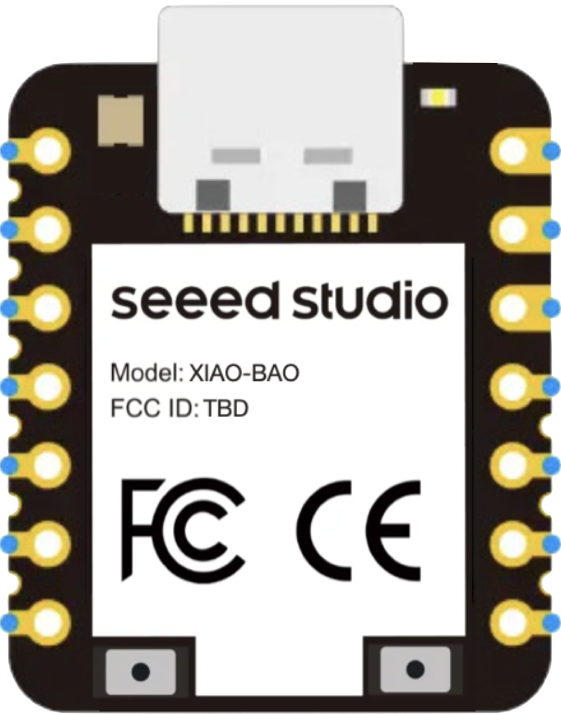
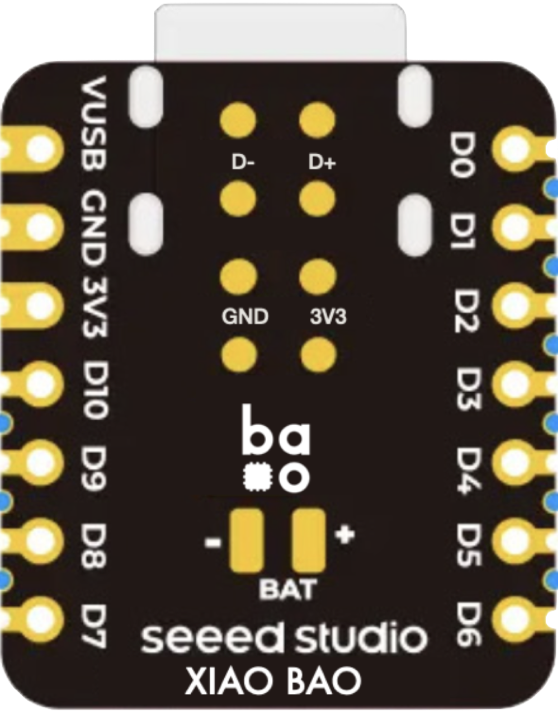

| Pin | Name | SPI | I2C | UART | PWM | ADC | BIO | GPIO |
|---|---|---|---|---|---|---|
| GPIO_PA4 | ADC0 | |||||
| GPIO_PC6 | BIO_22 | I2C_3_SDA | ||||
| GPIO_PA5 | ADC1 | |||||
| GPIO_PC5 | BIO_21 | I2C_3_SCL | ||||
| GPIO_PA6 | ADC2 | |||||
| GPIO_PC3 | BIO_19 | SPI_2_CS0 | PWM_2[3] | |||
| GPIO_PC14 | BIO_30 | |||||
| GPIO_PC9 | BIO_25 | |||||
| GPIO_PB12 | BIO_12 | I2C_0_SDA | ||||
| GPIO_PC8 | BIO_24 | |||||
| GPIO_PB11 | BIO_11 | I2C_0_SCL | ||||
| GPIO_PC7 | BIO_23 | |||||
| GPIO_PB14 | BIO_14 | UART_2_TX |


| Pin | Name | SPI | I2C | UART | PWM | ADC | BIO | GPIO |
|---|---|---|---|---|---|---|---|---|
| GPIO_PC1 | BIO_17 | SPI_2_D0 | PWM_2[1] | |||||
| GPIO_PB9 | BIO_9 | |||||||
| GPIO_PC2 | BIO_18 | SPI_2_D1 | PWM_2[2] | |||||
| GPIO_PB1 | BIO_1 | PWM_1[1] | ||||||
| GPIO_PC0 | BIO_16 | SPI_2_CLK | PWM_2[0] | |||||
| GPIO_PC4 | BIO_20 | SPI_2_CS1 | ||||||
| GPIO_PB13 | BIO_13 | UART_2_RX |